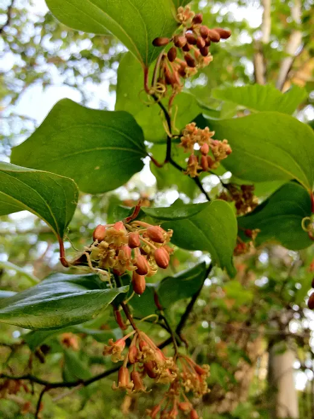

Greenbrier shoots
Greenbrier shoots is a root or shoot you can forage from March to June in Northeast, Southeast, Midwest and Southwest. Thorny green vines of thickets; the tips grow fast in spring with tendrils and soft, snappable stems.

When is greenbrier shoots in season in the United States?
Greenbrier shoots is usually in season March to June. Timing shifts with weather, latitude and altitude.
Where does greenbrier shoots grow in the United States?
Greenbrier shoots grows in Alabama, Arizona, Arkansas, Connecticut, Delaware, District of Columbia, Florida, Georgia, Illinois, Indiana, Iowa, Kentucky, Louisiana, Maine, Maryland, Massachusetts, Michigan, Minnesota, Mississippi, Missouri, Nevada, New Hampshire, New Jersey, New Mexico, New York, North Carolina, Ohio, Oklahoma, Pennsylvania, Rhode Island, South Carolina, Tennessee, Texas, Utah, Vermont, Virginia, West Virginia, Wisconsin. Regions: Northeast, Southeast, Midwest, Southwest.
How do you recognise greenbrier shoots?
Thorny green vines of thickets; the tips grow fast in spring with tendrils and soft, snappable stems.
How do you harvest greenbrier shoots?
Only dig roots where you have the landowner's permission, since uprooting wild plants is illegal in many places. Take a few from a large patch and backfill the hole.
How do you eat greenbrier shoots?
Raw or steamed shoot tips taste like snap peas and asparagus.
How do you store greenbrier shoots?
Best fresh.
What is greenbrier shoots good for?
Vitamin C.